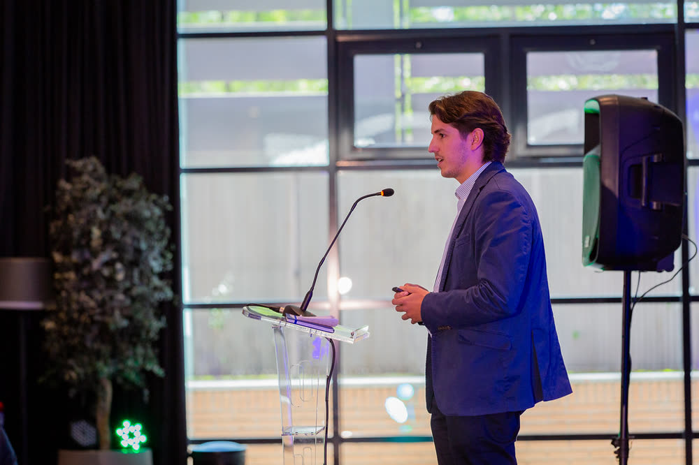

Welcome to Bamberg Security, where we bring together the leaders shaping the future of cybersecurity and digital trust.
Who we are
Connecting the leaders who protect the digital ecosystem
In an increasingly connected and AI-driven world, security, resilience and trust have become fundamental to every organization. Bamberg Security creates meaningful connections between the executives, institutions, governments and technology leaders responsible for protecting organizations, critical infrastructure, data and digital ecosystems.
Through our international Cybersecurity & Digital Trust Summit Series, executive meetings, strategic roundtables and thought-leadership initiatives, we provide a trusted environment where senior decision-makers can exchange insights, address regional challenges and build relationships that translate into action.
Our mission is simple: to strengthen cybersecurity and digital trust through meaningful connections, valuable insights and global collaboration.
“We deliver significant value through a unique combination of industry specialization, unparalleled dedication and extensive global reach, while maintaining deep relationships within each local market.
Cybersecurity and digital trust are global challenges, but their priorities, regulatory environments and business realities are often highly local. Our role is to bring together the leaders responsible for navigating those challenges and create an environment where meaningful conversations can happen.
The Bamberg Security team engages directly with CISOs, CIOs, technology executives, government leaders, regulators and other key stakeholders, condensing what could otherwise require hundreds of hours of travel and individual meetings into focused executive forums and intimate roundtable discussions.
Our objective is to build a global platform where the highest levels of cybersecurity, technology and digital trust leadership can engage in genuine peer-to-peer conversations, learn from one another and develop the relationships needed to build a more secure and trusted digital world.”
Daniel Para MataFounder, Bamberg Security
Our Unique Approach
How we work
Meaningful Connections
We build relationships across the cybersecurity and digital trust ecosystem to facilitate collaboration between the people responsible for protecting organizations and shaping digital strategy.
Through executive summits, intimate roundtables and strategic networking opportunities, we create environments designed for genuine interaction rather than mass attendance.
Our focus is on bringing the right people into the room and enabling conversations that can develop into meaningful professional relationships, partnerships and initiatives.
Valuable Insights
Cybersecurity challenges evolve rapidly and differ significantly across industries, organizations and geographies.
Bamberg Security brings together perspectives from CISOs, CIOs, government agencies, regulators, critical infrastructure operators, technology providers and other stakeholders to identify emerging priorities and understand how leading organizations are responding.
These conversations provide participants with practical insights into cybersecurity strategy, digital trust, AI security, data governance, privacy, risk and resilience.
Digital Trust
Trust has become fundamental to the digital economy.
Organizations must protect not only their infrastructure but also the data, identities, technologies and digital interactions upon which their customers, employees and partners depend.
Bamberg Security promotes a broader conversation around Digital Trust, connecting cybersecurity with areas including privacy, identity, data governance, AI governance, regulatory compliance and responsible technology.
Cyber Resilience
Cybersecurity is no longer simply about preventing attacks. Organizations must be prepared to anticipate, respond to and recover from disruption while maintaining essential operations.
We facilitate conversations around operational resilience, incident response, business continuity, ransomware preparedness, third-party risk and critical infrastructure protection.
By sharing experiences and best practices across industries and geographies, our community helps organizations become more resilient in an increasingly complex threat environment.
Innovation
Rapid advances in artificial intelligence, cloud computing, automation, identity technologies and cybersecurity are transforming both the opportunities and risks facing organizations.
Bamberg Security provides a platform where technology leaders and end-user organizations can explore emerging solutions, evaluate new approaches and discuss how innovation can be implemented responsibly and effectively.
We aim to connect technological innovation with the real challenges faced by organizations.
Local Engagement
Cybersecurity is global, but every market has its own priorities.
Regulation, critical infrastructure, economic structure, cyber maturity, government policy and threat environments differ significantly between regions.
Bamberg Security engages directly with local cybersecurity ecosystems to understand these differences and build programs around the challenges that matter most within each market.
Our regional approach ensures that discussions remain relevant, practical and connected to local realities.
Global Exposure
Our international platform connects cybersecurity and digital trust leaders across markets.
Insights developed in London can inform conversations in Frankfurt. Experiences from financial institutions in New York can provide lessons for organizations in Dubai. Approaches developed in Riyadh, Toronto, Madrid or Singapore can contribute to discussions elsewhere.
By connecting local ecosystems through a global platform, Bamberg Security facilitates the exchange of ideas, experiences and best practices across borders.
Key services
What we do
Flagship platform
Cybersecurity & Digital Trust Summit Series
The Bamberg Cybersecurity & Digital Trust Summit Series is our flagship international platform.
Our summits bring together senior cybersecurity, technology, risk, data and government leaders within strategic markets around the world for focused discussions on the most important challenges shaping cybersecurity and digital trust.
We prioritize the quality and relevance of participation over event size.
Our summits are designed to facilitate meaningful interaction between senior decision-makers in a professional, intimate and non-massive environment.
Participants include:
Chief Information Security OfficersChief Information OfficersChief Technology OfficersChief Data OfficersChief Digital OfficersChief Procurement OfficersChief Risk OfficersChief Privacy OfficersData Protection OfficersAI and Technology LeadersGovernment Cybersecurity LeadersRegulators and PolicymakersCritical Infrastructure LeadersSenior Security and Risk Executives

Regional Focus
Each summit is built around its local cybersecurity ecosystem.
We bring together regional enterprises, government institutions, regulators, critical infrastructure operators and technology leaders to discuss the priorities and challenges affecting that particular market.
This allows participants to move beyond generic cybersecurity conversations and engage with issues directly relevant to their organizations and region.
Global Perspective
While every summit is locally focused, each forms part of a broader international platform.
The Cybersecurity & Digital Trust Summit Series enables ideas and best practices to travel between regions, creating opportunities for cross-border learning and connecting cybersecurity leaders who face similar challenges in different markets.
A Cross-Industry Executive Community
Our agendas are designed to facilitate collaboration between CISOs, CIOs and senior security executives from diverse sectors—including financial services, energy, transportation, manufacturing, insurance, and logistics—alongside government agencies and regulatory bodies.
In an interconnected landscape, the challenges of cybersecurity and digital trust increasingly transcend individual industries. Safeguarding critical infrastructure, navigating AI security, managing data governance, and ensuring operational resilience require leaders to exchange insights with peers across the entire ecosystem.
By bridging these communities, Bamberg Security creates a unique environment for peer-to-peer exchange, enabling decision-makers to evaluate different approaches, share practical lessons, and identify best practices that strengthen organizations across all sectors.
While maintaining this broad perspective, each summit remains deeply rooted in its local cybersecurity ecosystem, ensuring that every conversation reflects the specific regulatory realities, threat landscapes, and business priorities of the region.
Comprehensive Coverage
The issues defining the future of cybersecurity and digital trust
Our programs explore the topics shaping how organizations protect themselves and earn trust, including:
Cybersecurity Strategy
Digital Trust
Artificial Intelligence & AI Security
Cyber Risk & Enterprise Risk
Cloud Security
Identity & Access Management
Data Security & Data Governance
Privacy & Regulatory Compliance
Zero Trust
Ransomware & Incident Response
Operational Resilience
Critical Infrastructure Protection
Third-Party & Supply Chain Risk
Cybersecurity Talent & Leadership
Emerging Technologies
Executive Meetings & Strategic Roundtables
Beyond our flagship summits
Bamberg Security organizes intimate executive meetings designed around specific cybersecurity and digital trust challenges.
Focused Discussions
Each meeting addresses a clearly defined strategic issue, allowing participants to explore a subject in greater depth than is typically possible within a larger conference environment.
High-Level Participation
Participants are carefully selected based on the subject of each meeting and typically include CISOs, CIOs, senior technology executives, government representatives, regulators and subject-matter experts.
Customized Agendas
Programs are developed around the priorities and interests of participants, ensuring discussions remain relevant and actionable.
Intimate Settings
Meetings are intentionally limited in size to encourage open dialogue, candid discussion and genuine relationship-building between participants.
Expert Moderation
Sessions are led by experienced moderators and subject-matter experts to maintain focused, productive and balanced conversations.
From Conversation to Action
Where appropriate, Bamberg Security extends discussions beyond the meeting itself through research, reports, working groups and future collaborative initiatives.
Strengthening security through knowledge and collaboration.
Government & Public-Private Collaboration
Strengthening Cybersecurity Through Collaboration
Cybersecurity cannot be addressed by the private sector or government independently.
Bamberg Security facilitates dialogue between government institutions, regulators, critical infrastructure operators and private-sector cybersecurity leaders to encourage greater collaboration around shared digital risks.
Our programs provide a neutral environment where stakeholders can discuss cybersecurity policy, regulation, national cyber resilience, critical infrastructure protection and emerging technological risks.
The insights generated through our summits, workshops and executive discussions can be developed into reports, recommendations and strategic initiatives. By capturing the collective experience of participating leaders, we aim to transform individual conversations into knowledge that can contribute to stronger organizations, industries and digital ecosystems.